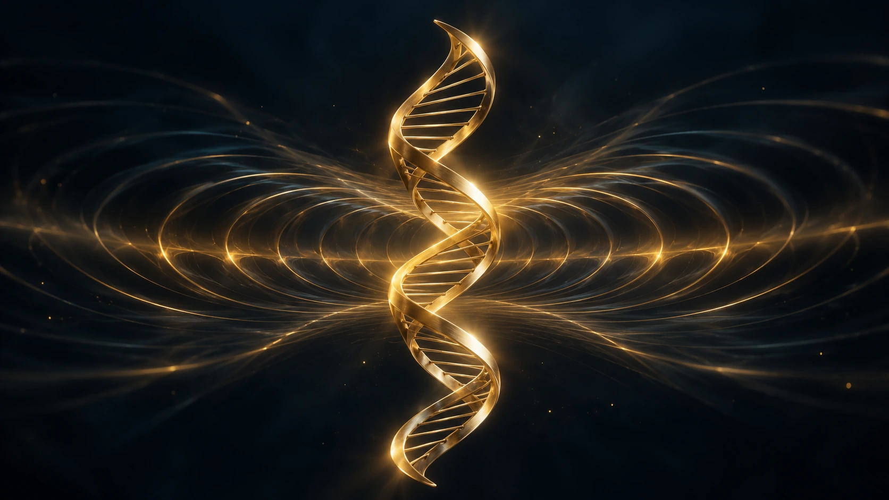

ARTWORK 002 ·
Warum ich
Wellen mag.
Von der Doppelhelix zum Meer, von einem Gedanken zur Musik. Über Bewegung, Weitergabe und die kleinen Wellen, die etwas Neues anstoßen.
Bild & Text entdeckenWELLENSOHN / ARTWORKS
Bilder zum Betrachten. Gedanken zum Mitnehmen.
Ein eigener Blick auf das, was uns beschäftigt.

ARTWORK 002 ·
Von der Doppelhelix zum Meer, von einem Gedanken zur Musik. Über Bewegung, Weitergabe und die kleinen Wellen, die etwas Neues anstoßen.
Bild & Text entdecken
ARTWORK 001 ·
Eine Welle, die an Schallplattenrillen erinnert. Ein Gedanke über Musik, Erinnerung und darüber, wie sich unser Blick verändert.
Bild & Text entdecken